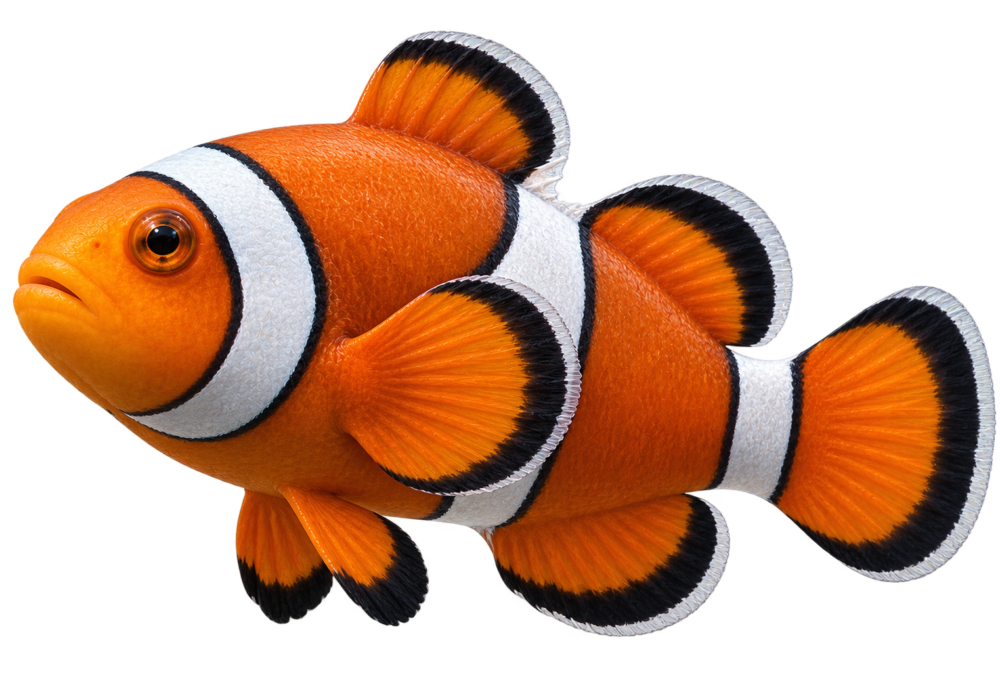
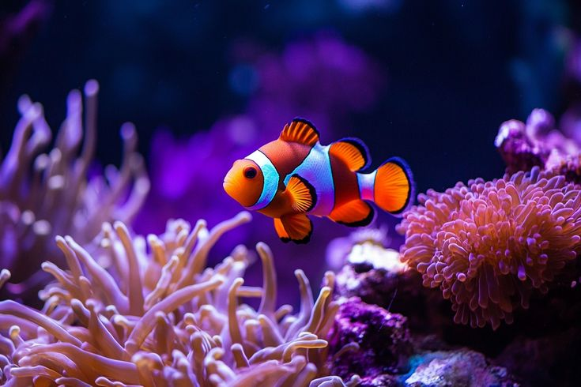
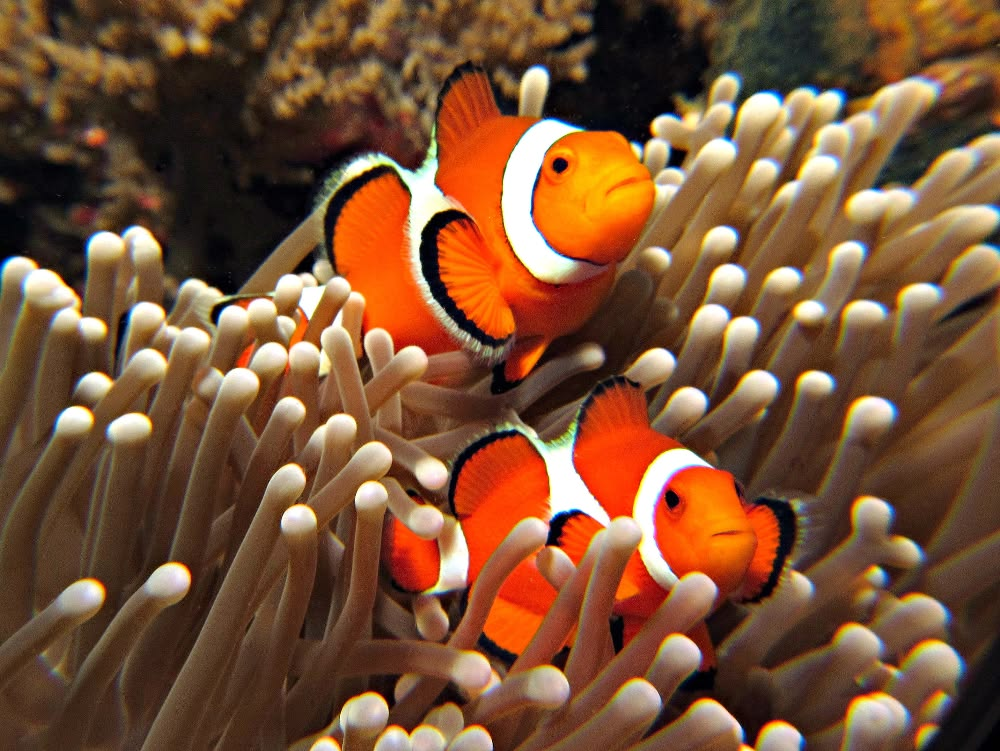
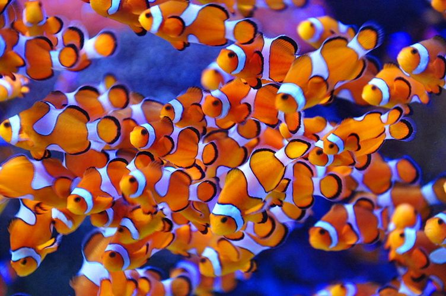

Peixe-palhaço
Amphiprioninae
O peixe-palhaço é um pequeno peixe marinho conhecido por suas cores vibrantes e listras brancas. Vive em uma relação especial com as anêmonas-do-mar.

Curiosidades
Alimentação
Alimentam-se de pequenos crustáceos, algas e restos de alimentos.
Tempo de vida
Podem viver entre 6 e 10 anos na natureza.
Amigos das Anêmonas
Vivem entre os tentáculos das anêmonas, onde encontram proteção contra predadores.
Nascimento
As fêmeas colocam ovos próximos às anêmonas, e os machos ajudam a protegê-los.
Importantes para o ecossistema
Ajudam a manter o equilíbrio dos recifes de coral e possuem uma relação importante com as anêmonas.
Habitat
Vivem em águas tropicais, principalmente em recifes de coral.


Você Sabia?
Todos os peixes-palhaço nascem machos, e alguns podem se transformar em fêmeas durante a vida!
